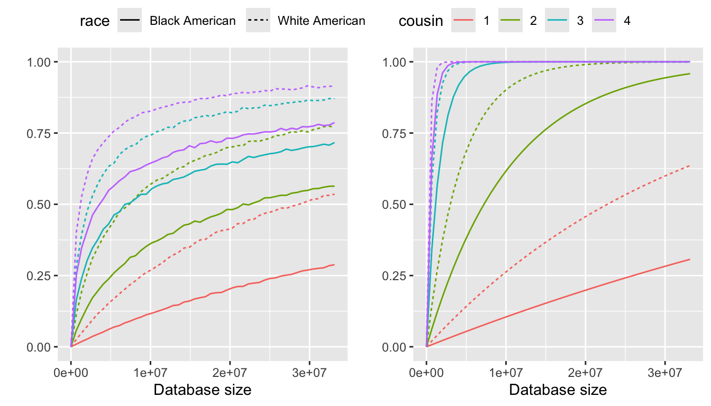

Last updated: 2025-06-02
Checks: 7 0
Knit directory: PODFRIDGE/
This reproducible R Markdown analysis was created with workflowr (version 1.7.1). The Checks tab describes the reproducibility checks that were applied when the results were created. The Past versions tab lists the development history.
Great! Since the R Markdown file has been committed to the Git repository, you know the exact version of the code that produced these results.
Great job! The global environment was empty. Objects defined in the global environment can affect the analysis in your R Markdown file in unknown ways. For reproduciblity it’s best to always run the code in an empty environment.
The command set.seed(20230302) was run prior to running
the code in the R Markdown file. Setting a seed ensures that any results
that rely on randomness, e.g. subsampling or permutations, are
reproducible.
Great job! Recording the operating system, R version, and package versions is critical for reproducibility.
Nice! There were no cached chunks for this analysis, so you can be confident that you successfully produced the results during this run.
Great job! Using relative paths to the files within your workflowr project makes it easier to run your code on other machines.
Great! You are using Git for version control. Tracking code development and connecting the code version to the results is critical for reproducibility.
The results in this page were generated with repository version 4b4154e. See the Past versions tab to see a history of the changes made to the R Markdown and HTML files.
Note that you need to be careful to ensure that all relevant files for
the analysis have been committed to Git prior to generating the results
(you can use wflow_publish or
wflow_git_commit). workflowr only checks the R Markdown
file, but you know if there are other scripts or data files that it
depends on. Below is the status of the Git repository when the results
were generated:
Ignored files:
Ignored: .DS_Store
Ignored: .Rhistory
Ignored: .Rproj.user/
Note that any generated files, e.g. HTML, png, CSS, etc., are not included in this status report because it is ok for generated content to have uncommitted changes.
These are the previous versions of the repository in which changes were
made to the R Markdown (analysis/probability_disparity.Rmd)
and HTML (docs/probability_disparity.html) files. If you’ve
configured a remote Git repository (see ?wflow_git_remote),
click on the hyperlinks in the table below to view the files as they
were in that past version.
| File | Version | Author | Date | Message |
|---|---|---|---|---|
| Rmd | 75d6332 | He Junhui | 2025-02-17 | modify probability_disparity.Rmd |
| html | 669998c | He Junhui | 2025-02-06 | Build site. |
| Rmd | 72bd07c | He Junhui | 2025-02-06 | update probability_disparity |
| html | b958b26 | Junhui He | 2025-01-29 | Build site. |
| Rmd | 0faff2d | Junhui He | 2025-01-29 | update probability disparity |
| Rmd | a69816f | Junhui He | 2025-01-29 | upload data for probability disparity |
| html | 1731b7f | Junhui He | 2025-01-22 | Build site. |
| Rmd | 90a3d7c | Junhui He | 2025-01-22 | wflow_publish("analysis/probability_disparity.Rmd") |
| html | 8c86890 | Junhui He | 2025-01-17 | Build site. |
| Rmd | 64c4f90 | Junhui He | 2025-01-17 | create a report for Result 3 |
We aims to determine the difference in the probability of finding a match in a direct-to-consumer (DTC) genetic database for Black and White Americans. This analysis integrates family size distributions (from Result 2), database representation disparities (from Result 1B), and considers the proportion of DTC databases accessible to law enforcement.
We establish a theoretical binomial model \(\text{Bin}(K,p)\) to calculate the probability of finding a match in a database, where \(K\) is the size of the database and \(p\) is the match probability between a target and another individual. The match probability \(p\) is calculated based on the population size, the database size, racial representation disparities, and the family size distribution.
In the current generation, the population size is \(N\), and the racial proportion of the population is \(\alpha\).
The database has \(K\) individuals, and the racial proportion of the database is \(\beta\). For a given race, the database is randomly sampled from the current population. Both the population proportion \(\alpha\) and the database proportion \(\beta\) are considered fixed constants.
The family trees of different races are strictly separated. For instance, the ancestors and descendants of black Americans are also black Americans.
There is no-inbreeding.
The number of children per couple at the generation \(g\) before the present is \(r_g\). It is assumed that \(r_g\) follows a multinomial distribution. In this model, the distribution of \(r_1\) is estimated based on the number of children born to women aged 40-49 in 1990, the distribution of \(r_2\) is estimated based on the number of children born to women aged 40-49 in 1960, and the distribution of \(r_3\) is estimated based on the number of children born to women aged 70+ in 1960. For generations \(g\geq 3\), \(r_g\) is assumed to follow the same distribution as \(r_3\). Additionally, if a specific couple is known as the ancestors of the target, it is assumed that they have at least one child.
Individuals are diploid and we consider only the autosomal genome.
The genome of the target individual is compared to those of all individuals in the database, and identical-by-descent (IBD) segments are identified. We assume that detectable segments must be of length \(\geq\) \(m\) (in Morgans). We further assume that in order to confidently detect the relationship (a “match”), we must observe at least \(s\) such segments
We only consider relationships for which the common ancestors have lived \(g\leq g_{\max}\) generations ago. For example, \(g=1\) for siblings, \(g=2\) for first cousins, etc. All cousins/siblings are full.
We only consider regular cousins, excluding once removed and so on.
The number of matches between the target and the individuals in the database is counted. If we have more than \(t\) matches, we declare that there is sufficient information to trace back the target. Typically, we simply assume \(t=1\).
Consider the cousins of the target. \(g\) generations before the present, the target has \(2^{g-1}\) ancestral couples. For example, each individual has one pair of parents (\(g=1\)), two pairs of grandparents (\(g=2\)), four pairs of great-grandparents (\(g=3\)) and so on. Each ancestral couple contributes to \((r_g-1) \prod_{i=1}^{g-1} r_i\) of the \((g-1)\)-th cousins of the target. For example, consider a pair of grandparents (\(g=2\)), each individual has \((r_2-1)\) uncles/aunts, and hence \((r_2-1)r_1\) first cousins. Note that \(r_g \geq 1\). Therefore, the total number of the \((g-1)\)-th cousins is given by
\[\text{The number of the $(g-1)$ cousins}=2^{g-1}(r_g-1) \prod_{i=1}^{g-1} r_i.\]
Under the assumption of separated family trees and randomly sampled database, given the family size, the probability to share an ancestral couple for the first time at generation \(g\) between the target and the individual in the database with the same race is approximately:
\[P(\text{first sharing a mating pair at $g$ for a certain race}|r)=\frac{2^{g-1}(r_g-1) \prod_{i=1}^{g-1} r_i}{\alpha N}.\]
Given the family size, the probability of declaring a match between the target and a random individual in the database is simply the sum of the product over all \(g\),
\[ P(\text{match}|r)=\sum_{g=1}^{g_{\max}} P(\text{match}|g) \frac{2^{g-1}(r_g-1) \prod_{i=1}^{g-1} r_i}{\alpha N}. \]
The number of matches to a database is assumed to follow a binomial distribution defined as
\[ \text{Bin}(\beta K, P(\text{match}|r)) .\]
To identify an individual, we need to find at least \(t\) matches in the database. Thus, given the family size,
\[P(\text{identify}|r)=1-\sum_{k=1}^{t-1} \text{Bin}(k;\beta K, P(\text{match}|r)).\]
We utilize Monte Carlo methods to calculate the mean probability of identifying an individual over family size, i.e., \(E[P(\text{identify}|r)]\). The Monte Carlo method is a popular statistical technique for numerically estimating expectations over complex distributions. Our algorithm follows these steps:
Given an integer \(I\in\mathbb{N}\), for each iteration \(i=1,\ldots,I\) and each generation \(g\), we independently sample a value of \(r_g^{(i)}\) from the corresponding family size distribution (which is modeled using a zero-inflated negative binomial model). We denote \(r^{(i)}\) as \(\{r_g^{(i)}\}_{g=1}^{g_\max}\).
For each sampled \(r^{(i)}\), we compute the identifying probability \(P(\text{identify}|r^{(i)})\).
The expected identification probability is then estimated as: \[E[P(\text{identify}|r)]=\frac{1}{I}\sum_{i=1}^I P(\text{identify}|r^{(i)}).\]
Additionally, since \(r\) is a random variable, we calculate \(P(\text{identify}|\bar{r})\) to make a comparison with \(E[P(\text{identify}|r)]\), where \(\bar{r}\) represents the mean number of children. This probability \(P(\text{identify}|\bar{r})\) is used in the paper of Erlich et al. 2018, if we substitute \(\bar{r}\) by a constant \(r\).
We focus on long-range familial search in the United States, using the U.S. Census population as the total population size, given as \(N=331,449,281\). The racial composition is \[\alpha_{black}=12.05021\%,~\alpha_{white}=57.83619\%,~\alpha_{other}=30.1136\%,\] where \(\alpha_i\) indicates the proportion of race \(i\) in the population.
Our analysis examines how family size distributions and database representation influence the probability of identifying an individual in a database. We consider two scenarios for database representation:
Ideal case: All racial groups are proportionally represented in the database, meaning \(\beta_{black}=\alpha_{black}\) and \(\beta_{white}=\alpha_{white}\).
Real case: Black Americans are underrepresented in the database, while White Americans are overrepresented. The exact values of \(\beta\) depend on the specific database available. For this analysis, we use a calibrated estimation from Stella BooydeGraaff (Result 1b), where \[\beta_{black}=3.847235\%,~\beta_{white}=80\%.\]
In our analysis, the maximum database size is set to \(K=0.1*N=33,144,928\). Thus, the range of database size is \([0,0.1*N].\)
In this subsection, we assume that the population and database have the same representation. The database proportions \(\beta\) are set equal to the population proportions \(\alpha\) in the calculation of identifying probabilities. These results are utilized to explore the solely influence of disparities in the family size of different races.
The probabilities of identifying an individual over the family size up to a certain type of cousinship from a database without representation disparities, where the identifying probability is \(E[P(\text{identify}|r)]\) and the pseudo probability is \(P(\text{identify}|\bar{r})\). The family size distributions are estimated using a zero inflation model.
From left to right, the panels in Figure 1 are:
Identifying probability using zero inflation models (specifically, the better model from zero-inflated negative binomial and zero-inflated poisson)
Pseudo identifying probability
In this subsection, we assume that representation disparities exist between the population and the database. Specifically, Black Americans are underrepresented, while White Americans are overrepresented in the database. We calculate the probabilities of identifying an individual by treating \(\alpha\) and \(\beta\) fixed as constants. When the database size is much smaller than the population size, this assumption seems to be reasonable.
The probabilities of identifying an individual over the family size up to a certain type of cousinship from a database with representation disparities, where the identifying probability is \(E[P(\text{identify}|r)]\) and the pseudo probability is \(P(\text{identify}|\bar{r})\). The family size distributions are estimated using a zero inflation model.
From left to right, the panels in Figure 2 are:
Identifying probability using zero inflation models
Pseudo identifying probability

Without accounting for representation disparities, it is interesting to note that the expected identification probability, \(E[P(\text{identify}|r)]\), is higher for Black Americans than for White Americans at lower degrees of cousinship. However, this difference diminishes as the degree of cousinship increases and eventually reverses. A potential explanation is that Black Americans, on average, have larger family sizes than White Americans, leading to higher \(E[P(\text{identify}|r)]\) at lower degrees of cousinship. However, the family size distribution among Black Americans is bimodal, meaning they are significantly more likely than White Americans to have no children. As a result, at higher degrees of cousinship, \(E[P(\text{identify}|r)]\) becomes lower for Black Americans compared to White Americans. A graphical explanation of this pattern is provided in Section 5.
Considering representation disparities, the identification probability for White Americans is significantly higher than that for Black Americans, as black Americans are underrepresented while white Americans are overrepresented.
The value of \(P(\text{identify}|\bar{r})\) is notably higher than \(E[P(\text{identify}|r)]\), highlighting the importance of considering family size as a complete distribution in the analysis.
To intuitively illustrate the impact of the full distribution of the number of children on the calculation of the identification probability, we assume that \(r_g=r_0\) for all \(g\geq 1\), and compute the probability \(P(\text{identify}|r_0)\) for various constant values of \(r_0\). Especially, we consider the scenarios where \(r_0\) is set to \(2\), \(2.5\) and \(3\).
Furthermore, we consider a random family size \(r\) with the following distribution: \[P(r=2)=P(r=3)=50\%.\] This implies that half of the couples have 2 children, while the other half have 3 children. The mean family size, denoted by \(\bar{r}\), is given as \(2.5\). Consequently, we obtain the following relationships: \[E[P(\text{identify}|r)] = 0.5*P(\text{identify}|2) + 0.5 * P(\text{identify}|3),\] \[P(\text{identify}|\bar{r}) = P(\text{identify}|2.5).\]
Remark: The formula for \(E[P(\text{identify}|r)]\) above implicitly assumes the number of children remains the same across generations. This assumption is made solely to simplify the expression; the correct formula would be significantly more complex. For example, assuming \(g_\max=2\), the expectation can be expressed as: \[E[P(\text{identify}|r)]=0.5*0.5*P(\text{identify}|r_1=2,r_2=2)+0.5*0.5*P(\text{identify}|r_1=2,r_2=3)\\+0.5*0.5*P(\text{identify}|r_1=3,r_2=2)+0.5*0.5*P(\text{identify}|r_1=3,r_2=3).\]
This figure shows that \(P(\text{identify}|\bar{r})>E[P(\text{identify}|r)]\), with the difference becoming more pronounced as the degree of cousinship increases. The underlying mathematical principle responsible for this relationship is Jensen’s Inequality.
R version 4.3.1 (2023-06-16)
Platform: aarch64-apple-darwin20 (64-bit)
Running under: macOS 15.5
Matrix products: default
BLAS: /Library/Frameworks/R.framework/Versions/4.3-arm64/Resources/lib/libRblas.0.dylib
LAPACK: /Library/Frameworks/R.framework/Versions/4.3-arm64/Resources/lib/libRlapack.dylib; LAPACK version 3.11.0
locale:
[1] en_US.UTF-8/en_US.UTF-8/en_US.UTF-8/C/en_US.UTF-8/en_US.UTF-8
time zone: America/Detroit
tzcode source: internal
attached base packages:
[1] stats graphics grDevices utils datasets methods base
other attached packages:
[1] ggpubr_0.6.0 ggplot2_3.5.2
loaded via a namespace (and not attached):
[1] sass_0.4.10 generics_0.1.4 tidyr_1.3.1 rstatix_0.7.2
[5] stringi_1.8.7 digest_0.6.37 magrittr_2.0.3 evaluate_1.0.3
[9] grid_4.3.1 RColorBrewer_1.1-3 fastmap_1.2.0 rprojroot_2.0.4
[13] workflowr_1.7.1 jsonlite_2.0.0 whisker_0.4.1 backports_1.5.0
[17] Formula_1.2-5 gridExtra_2.3 promises_1.3.3 purrr_1.0.4
[21] scales_1.4.0 jquerylib_0.1.4 abind_1.4-8 cli_3.6.5
[25] rlang_1.1.6 cowplot_1.1.3 withr_3.0.2 cachem_1.1.0
[29] yaml_2.3.10 tools_4.3.1 ggsignif_0.6.4 dplyr_1.1.4
[33] httpuv_1.6.16 broom_1.0.8 vctrs_0.6.5 R6_2.6.1
[37] lifecycle_1.0.4 git2r_0.36.2 stringr_1.5.1 fs_1.6.6
[41] car_3.1-3 pkgconfig_2.0.3 pillar_1.10.2 bslib_0.9.0
[45] later_1.4.2 gtable_0.3.6 glue_1.8.0 Rcpp_1.0.14
[49] xfun_0.52 tibble_3.2.1 tidyselect_1.2.1 rstudioapi_0.17.1
[53] knitr_1.50 farver_2.1.2 htmltools_0.5.8.1 labeling_0.4.3
[57] rmarkdown_2.29 carData_3.0-5 compiler_4.3.1